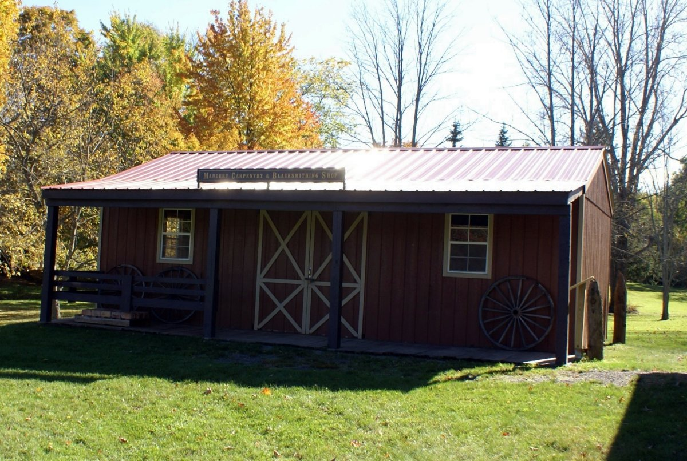

Carpenter and Blacksmith Shop

Mandery Carpenter and Blacksmith Shop
A replica of a carpentry and blacksmith shop from the 19th century, this shop holds a woodworking bench with an attached vise for pieces to be worked on and a blacksmith's tool bench, as well as a forge and bellows. The blacksmith's main tools were the forge, hammer, and anvil.
One of the blacksmith's main jobs was to shoe horses. He shaped the horseshoe, rasped the hoof, and burned and nailed the horseshoe in place. This did not hurt the horse. Besides making horseshoes, the blacksmith could make almost anything with wrought iron. Farmers often came to him for repairs.
Jim Codding is the master carpenter at Heritage Square. He made beautiful tables out of Heritage Square's fallen maple tree.
Building Must-See: Giant Bellows